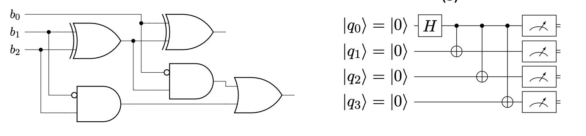
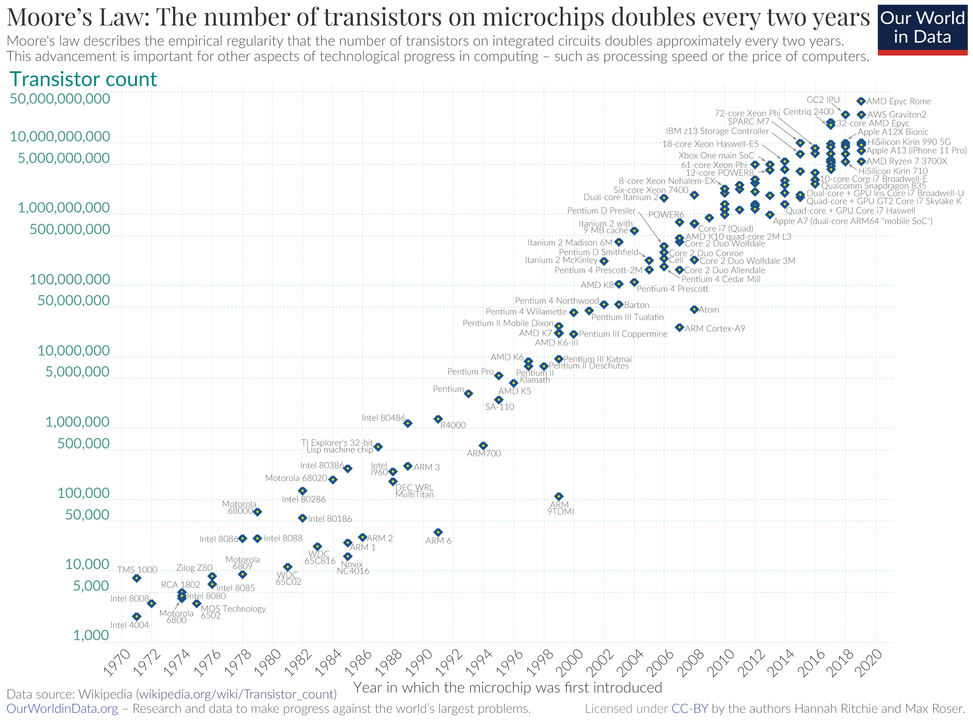

Komputery klasyczne i kwantowe
Nature isn’t classical, dammit, and if you want to make a simulation of Nature, you’d better make it quantum mechanical, and by golly it’s a wonderful problem because it doesn’t look so easy. Richard Feynman
Quntum Machine Learning
Co oznacza termin kwantowe uczenie maszynowe?
Uczenie maszynowe (ale również i uczenie głębokie) to nauka i ,,sztuka’’ opisująca jak sprawić by komputery mogły ,,uczyć się’’ na podstawie danych, tak by rozwiązać problemy, których typowe programowanie nie miałoby sensu (lub byłoby zbyt skomplikowane). Więcej na ten temat znajdziesz w książce
Obliczenia kwantowe opisują przetwarzenie informacji na urządzeniach pracujących zgodnie z zasadami mechaniki kwantowej.
Uwaga! klasyczne komputery (tranzystory) również działają zgodnie z zasadami mechaniki kwantowej, ale wykonywane operacje opierają się o logikę klasyczną.
Oba kierunki są istotne w procesie przetwarzania danych obecnie i w niedalekiej przyszłości. Dlatego naturalnym pytaniem jest jak je ze sobą połączyć?
QML to realizowanie metod uczenia maszynowego, które mogą być wykonywane na komputerach kwantowych.
you start with classical mechanics and electrodynamics, solving lots of differential equations at every step. Then you learn about the “black-body paradox” and various strange experimental results, and the great crisis these things posed for physics. Next you learn a complicated patchwork of ideas that physicists invented between 1900 and 1926 to try to make the crisis go away. Then, if you’re lucky, after years of study you finally get around to the central conceptual point: that nature is described not by probabilities (which are always non-negative), but by numbers called amplitudes that can be positive, negative, or even complex. Scott Aaronson, Quantum Computing Since Democritus
Kwantowe uczenie maszynowe możemy określić jako uczenie maszynowe realizowane na komputerach kwantowych. Zasadniczym jest pytanie na ile i czy wogóle komputery kwantowe mogą poprawić jakość modeli uczenia maszynowego i czy pozwalają zrealizować coś więcej niż wykorzystanie klasycznych komputerów.
Odpowiedź To zależy:
- jaki problem?
- jakie dane?
- jaki typ analizy?
- jaki typ komputera kwantowego?
- co znaczy lepiej? precyzja, czas, koszt, skalowalność, zużycie energii, …
Sztuczna inteligencja

Historia AI sięga 1950 roku (A. Turing). Rozwój technologii związanych z danymi ustrukturyzowanymi i nieustrukturyzowanymi realizowany np. w:
- rozpoznawanie i tworzenie ,,mowy’’
- ,,rozumienie’’ obrazów i filmów
- rozgrywanie gier
- rekomendacje
- systemy diagnostyczne
- planowanie
- podejmowanie decyzji
- booty, agenci …
Zadania te realizowane są w oparciu o uczenie maszynowe (Machine Learning) i głębokie sieci neuronowe (Deep Learning).
Dlaczego tak chętnie używamy:
- Wykładniczy wzrost ilości (treningowych) danych dostępnych w social mediach, internecie, aplikacjach mobilnych, IoT.
- Wzrost możliwości i spadek ceny (kosztów) jakości sprzętu komputerowego - co-procesory GPU, TPU, …
- Oprogramowanie Open Source
- Przewaga konkurencyjna przedsiębiorstw z AI nad firmami bez AI
Uwaga! Zakładam, że znasz podstawowe pojęcia uczenia maszynowego i głębokiego.
Uczenie maszynowe (ang. Machine Learning) realizowane jest w kilku głównych kategoriach:
Uczenie nadzorowane (ang. supervised learning) - posiadając oznaczone dane \((x_i, y_i)\) szukamy funkcji \(f(x_i) = y_i\) tak by uogólnić ją na nowe dane. Np. dać kredyt, czy na obrazie jest kot albo pies itp.
Uczenie nienadzorowane (ang. unsupervised learning) - posiadając dane \((x_i)\) szukamy ukrytych struktur w danych.
Uczenie przez wzmacnianie (ang. reinforcement learning) - agent uczy się realizować zadania w środowisku na podstawie nagród i kar.
Uczenie transferowe - to technika w uczeniu maszynowym, która polega na wykorzystywaniu wiedzy lub umiejętności nabytej w jednym zadaniu do rozwiązania innych zadań. Uczenie transferowe jest szeroko stosowane w praktyce. Np. , model językowy, który nauczył się rozpoznawać język naturalny w jednym zadaniu, może być używany do polepszania innych zadań, takich jak tłumaczenie maszynowe, analiza sentymentu czy rozpoznawanie tekstu pisanego.
Uczenie pół-nadzorowane to podejście, które wykorzystuje zarówno dane oznaczone (gdzie mamy etykiety klas) jak i dane nieoznaczone (gdzie brakuje etykiet) do trenowania modelu.
Komputery klasyczne
Komputer to fizyczne urządzenie bazujące na obwodach elektronicznych (ang. electronic circuits), które służy do przetwarzania informacji.

Algorytmy (programy komputerowe - ang. software) to sekwencje logicznych i matematycznych kroków, które określają sposób rozwiązywania problemu lub wykonywania obliczeń przy użyciu komputera. Są to abstrakcyjne przepisy, które programy komputerowe implementują, aby przetwarzać dane i osiągnąć konkretne cele.
Prawo Moore’a
An observation that the number of transistors on microchip roughly doubles every two years, whereas its cost is halved over that same timeframe. The growth of microprocessors is exponential
Zwiększenie szybkości działania oraz pojemności klasycznych komputerów co dwa lata, zmniejszając przy tym koszty. W ostatnich latach obserwujemy, że to prawo zaczyna osiągać swoje ograniczenia, a dalszy wzrost mocy komputerów może być trudniejszy do osiągnięcia w tradycyjny sposób.

Fizyczne (klasyczne) ograniczenia dla procesorów
- Rozmiary tranzystora \(\sim\) rozmiary atomów - lata 90’te \(500 nm\) obecnie \(14 nm\) i \(7 nm\).
- Prędkość światła \(\sim\) max prędkość przesyłu informacji.
- Wysoki koszt wytwarzania (kierunek układów wieloprocesorowych)
- W miarę jak tranzystory stają się coraz mniejsze, zbliżają się do skali wymiarów atomów, co prowadzi do pojawienia się efektów kwantowych, które mogą wpływać na ich zachowanie. Rozwój komputerów kwantowych stanowi próbę obejścia tych ograniczeń.
- Wysoki pobór prądu.
- W miarę jak komputery stają się bardziej zaawansowane i wykonują bardziej intensywne obliczenia, generują znaczne ilości ciepła. To może prowadzić do problemów z chłodzeniem i wpływać na wydajność. Ograniczenia te wymagają innowacji w zakresie chłodzenia komputerów.
- Produkcja mikroprocesorów i układów scalonych wymaga rzadkich materiałów i zasobów, co może stanowić ograniczenie w kontekście zrównoważonego rozwoju technologii komputerowych.
Dla większości praktycznych zastosowań, opis makroskopowy oraz klasyczne teorie fizyczne są wystarczające do opisu własności prądu w obwodach elektrycznych. Jednakże, gdy naszym celem jest realizacja obliczeń wykorzystujących własności mikroskopowych obiektów, okazuje się, że klasyczny opis przestaje być wystarczający. W takich przypadkach, musimy zwrócić się ku mechanice kwantowej, która jest najlepiej przetestowanym i stosowanym opisem mikroświata, jaki znamy. Komputer, który wykonuje obliczenia zgodnie z zasadami mechaniki kwantowej, nazywamy komputerem kwantowym. Dzięki swojej zdolności do wykorzystania zjawisk kwantowych, takich jak superpozycja i splątanie, komputery kwantowe mogą rozwiązywać problemy, które byłyby trudne lub niemożliwe do rozwiązania za pomocą klasycznych komputerów. Są one obiecującą technologią, która otwiera nowe możliwości w dziedzinie obliczeń i nauki.
Obliczenia kwantowe
Film wprowadzający: link
Termin Mechanika Kwantowa (MK) jest używany zamiennie z terminem Teoria Kwantowa. Istnieją jednak teorie kwantowe, takie jak Kwantowa Teoria Pola, które wykraczają poza zakres mechaniki kwantowej.
MK przewiduje wyniki eksperymentów przeprowadzanych na układach kwantowych, tj. mikroskopowych obiektach fizycznych, dla których fizyka klasyczna nie jest wystarczająca. Przykładem może być atom wodoru. MK opisuje zachowanie obiektów takich jak fotony, elektrony lub kwantowe bity (qubity).
Warto zaznaczyć, że Mechanika Kwantowa jest fundamentem, na którym opiera się wiele innych teorii i dziedzin fizyki.
Na naszym wykładzie nie będą interesować nas własności fizyczne kubitów a ograniczymy się do znajomości ich pewnych, abstrakcyjnych stanów w jakich mogą się one znajdować. Stany te numerowane będą liczbami naturalnymi.
Fizyka klasyczna jest zazwyczaj rozumiana jako graniczny przypadek MK. Niemniej jednak, fizycy często starają się oddzielać te dwie dziedziny i stosować odpowiednią teorię do odpowiedniego problemu. Np, w konstrukcji mostów korzysta się z fizyki klasycznej, a nie MK.
Warto zaznaczyć, że wyniki MK są probabilistyczne, co często prowadzi do błędnego przekonania, że MK jest teorią statystyczną. Niemniej jednak, nie jest to prawda. Mechanikę Kwantową można raczej uznać za uogólnienie klasycznej definicji prawdopodobieństwa.
Historia MK
Początek Mechaniki Kwantowej związane są z pracami Maxa Plancka (1900) i Alberta Einsteina (1905), którzy wprowadzili pojęcie kwantu - czyli najmniejszej porcji energii. Dalszy rozwój Mechaniki Kwantowej związany jest z badaniami takich naukowców jak Niels Bohr, Erwin Schrödinger, Louis de Broglie, Heisenberg, Dirac, Feynman i wielu innych. Pozostałe informacje możesz znaleźć w artykule o obliczeniach kwantowych
Informatyków (najczęściej) nie interesuje, w jaki sposób właściwości fizyczne układów są wykorzystywane do przechowywania informacji w komputerze klasycznym. Podobnie, nie muszą się zastanawiać nad fizycznym mechanizmem, za pomocą którego informacja kwantowa jest realizowana w komputerze kwantowym. Czy prowadząc samochód zastanawiasz się, jak dokładnie działają wszystkie jego części? A pisząc kod modelu, zastanawiasz się, jak został on zaimplementowany w bibliotece?” Informatycy często nie muszą zagłębiać się w szczegóły fizycznej realizacji, skupiając się za to na wydajnym wykorzystaniu technologii komputerowych.
Historia obliczeń kwantowych
- 1936 Alan Turing opublikował pracę On Computable Numbers, która stanowiła istotny krok w kierunku teoretycznych podstaw obliczeń (Hilbert Problems) - universal computing machine local
- 1976 Roman S. Ingarden - Quantum Information Theory Roman S. Ingarden wprowadził pojęcie teorii informacji kwantowej, co miało kluczowe znaczenie dla rozwoju komputerów kwantowych.
- 1980 Paul Benioff - Paul Benioff przedstawił teoretyczną koncepcję komputerów kwantowych jako fizycznych systemów, otwierając drzwi do praktycznych implementacji.
- 1981 Richard Feynman - zwrócił uwagę na to, że klasyczne komputery nie są w stanie efektywnie symulować procesów kwantowych.
- 1985 David Deutsch opracował pierwszy opis kwantowej maszyny Turinga i algorytmów przeznaczonych do uruchamiania na komputerach kwantowych, w tym bramek kwantowych.
- 1994 Peter Shor opracował algorytm faktoryzacji liczb w czasie wielomianowym, co miało znaczenie dla kryptografii i bezpieczeństwa informacji.
- 1996 Lov Grover - Lov Grover stworzył algorytm Grover’a, który okazał się wyjątkowo efektywny w przeszukiwaniu stanów kwantowych.
- 2000 Został zbudowany pierwszy komputer kwantowy (5 qubitów) oparty na nuklearnym rezonansie magnetycznym, co stanowiło ważny krok w rozwoju fizycznych platform komputerów kwantowych.
- 2001 Demonstracja algorytmu Shora potwierdziła praktyczność i znaczenie algorytmów kwantowych.
- 2007 Firma D-Wave dokonała pierwszej sprzedaży komercyjnego komputera kwantowego, co miało wpływ na rozwój technologii komputerów kwantowych w sektorze prywatnym.
- Firma IBM dokonała znaczącego przełomu, pokazując, że klasyczne superkomputery nie są w stanie efektywnie symulować systemów zawierających więcej niż 56 kubitów, co jest znane jako “quantum supremacy.”
- 23 października 2019: Google ogłosił uzyskanie tzw. quantum supremacy na 53 kubitach.
- 2020 Zespół Jian-Wei Pana z University of Science and Technology of China dokonał przełomu, realizując 76 fotonowych kubitów na komputerze Jiuzhang.
- 2022 Firma Xanadu dokonała znaczących postępów w dziedzinie technologii komputerów kwantowych.
- 2023 Pierwszy logiczny qubit?
Od około 1990 roku fizycy i informatycy pracują nad fizyczną realizacją komputerów kwantowych. Jednym z popularnych modeli obliczeń na komputerach kwantowych jest model oparty na kwantowych obwodach (ang. quantum circuit), który wykorzystuje qubity zamiast klasycznych bitów. Podobnie jak w przypadku obwodów klasycznych, w modelu kwantowym definiuje się bramki kwantowe (ang. quantum gates), które pozwalają na wykonywanie operacji na qubitach.
Fizyczna konstrukcja komputera kwantowego, a właściwie qubitu, jest zadaniem nietrywialnym, ponieważ wymaga manipulacji bardzo małym układem, który jest zazwyczaj wyjątkowo wrażliwy na wszelkie oddziaływania z otoczeniem. Efektem tego oddziaływania jest pomiar układu przejście do jego stanu własnego (co oznacza zniszczenie przygotowanego stanu np. superpozycji). Efekt ten nazywa się dekoherencją.

Dlaczego chcemy używać komputerów kwantowych?
Kwantowa Złożoność (Quantum Complexity)
Nowy paradygmat wykorzystuje unikalne cechy interferencji, superpozycji i splątania w celu wykonywania obliczeń. Obecnie realizowany jest w trzech modelach:
- Quantum Circuits (Obwody Kwantowe) - oparty na modelu bramkowym, pozwala realizować algorytmy typu QAOA, VQA, oraz metody hybrydowe.
- Adiabatyczne Obliczenia Kwantowe (D-Wave) - polegające na minimalizacji energii, z wykorzystaniem optymalizacji QUBO i analogii do modelu Isinga.
- Topologiczne Komputery Kwantowe - oparte na topologicznych kubitach.
Problemy, które uważamy za trudne do rozwiązania klasycznie, takie jak optymalizacja, stają się łatwiejsze dla komputerów kwantowych. Przykładem moze być faktoryzacja liczb. Klasyczne komputery nie są w stanie efektywnie symulować działania kwantowych komputerów. Koszt najlepszych symulatorów rośnie wykładniczo wraz z liczbą kubitów. Możliwości komputerów kwantowych są potencjalnie ogromne, ale obecnie istnieją pewne ograniczenia link. Kwantowy komputer może być używany do efektywnej symulacji niemal dowolnego procesu fizycznego zachodzącego w przyrodzie, choć nie zawsze jesteśmy pewni, czy taka symulacja jest możliwa.
Podstawowym faktem przewagi komputerów kwantowych nad klasycznymi jest tzw. parallelizm. Ze względu, iż kubity moga znajdowac się w superpozycji stanów, komputer kwantowy może przeprowadzic obliczenia jednocześnie na wszystkich stanach. Co dokładnie to oznacza, poznamy w dalszej czesci wykładu. Rozważmy sytuację w której chcemy poznac działanie funkcji \(f(x)\) dla pewnego argumentu \(x\) (dla pewnej liczby). Aby znaleźc wynik dla dwóch liczb (np. \(x=0\) i \(x=1\)) klasyczny komputer musi wykonac dwie operacje. Komputer kwantowy może uzuskac ten wynik przeprowadzajac obliczenia jednocześnie dla obu warości. Do wykonania takiej operacji wystarczy jeden kubit. Następnie jeżeli będziemy chcieli obliczyc nasza funkcję dla kolejnych liczb \(x=2\) (która binarnie reprezentowana jest jako \(10\)) oraz liczby \(x=3\) (binarnie \(11\)) musimy dodac kolejny (jeden!) kubit. Dwa kubity moga posłużyc do realizacji czterech równoległych operacji. Jeśli rozważymy 3 kubity znowu mozemy podwoic ilośc operacji (3 kubity maja 8 stanów bazowych). Dodanie kubitu do komputera kwantowego pozwala podwoic liczbę obliczeń. W przypadku klasycznego komputera aby uzyskac taki efekt, potrzeba podwoic rownież liczbę bitów. n-kubitów moze realizowac \(2^n\) równoległych obliczeń.
Druga istotna koncepcja jest pamięc. Klasyczne komputery (np. 64-bitowy laptop) każda liczbę moga zareprezentowac w 64-biotwej reprezentacji (rozszerzenie reprezentacji 8 bitowej). Jeśli chcemy otrzymac 4 liczby w takiej reprezentacji potrzebujemy \(4\times 64=256\) bitów pamięci na twardym dysku. Dla \(M\) liczb potrzebujemy zatem \(M \times 64\) bitów pamięci. W przypadku komputera kwantowego operujacego na n-kubitach możemy przechowac \(2^n\) różnych współczynników traktujac taki stan jako pamięc. W odróżnieniu od klasycznej pamięci, gdzie ilośc bitów pamięci jest liniowa w stosunku do ilości liczb, pamięc realizowana na kubitach jest funkcja logarytmiczna od ilości liczb.
Dzisiejsze Klasyczne komputery to zaawansowane maszyny zwieraja dziesiatki terabajtów pamięci i moga symulowac niewielki układy kwantowe. Obecnie najwieksze komputery potrafia symulowac ok 46 kubitów. Dla porównania obecnie IBM pozwala użytkowac komputer kwantowy oparty o 127 kubitów (a nawet 1000).
Kwantowa Korekcja Błędów (Quantum Error Correction)
Dekoherencja, czyli oddziaływanie z otoczeniem, niszczy stan komputera kwantowego i wprowadza błędy obliczeniowe. Istnieje potrzeba zabezpieczenia przed tym zjawiskiem. Obliczenia kwantowe wymagają tzw. korekcji błędów, która pomaga w utrzymaniu integralności obliczeń na komputerach kwantowych. Aktualnie mówimy o erze Noisy Intermediate-Scale Quantum (NISQ), co oznacza, że komputery kwantowe wciąż potrzebują rozwoju w zakresie korekcji błędów i stabilności.
Realizacja fizyczna komputerów kwantowych

Proces obliczeń kwantowych
Wykonanie obliczeń związane jest z pojęciem fizycznego doświadczenia. Będzie się ono składać z trzech części:
- przygotowanie (przygotuj stan kwantowy kubitów),
- ewolucja (przeprowadź transformację za pomocą bramek kwantowych),
- pomiar i interpretacja wyników.

Podobnie w informatyce i w analizach danych wykonujemy obliczenia klasyczne. przygotowujemy dane (stan początkowy); następnie wykonujemy program (ewolucja) i odczytujemy wyniki (pomiar).
Nie obserwujemy tych etapów podczas codziennej interakcji z komputerem, więc nie zauważamy w sposób świadomy powyższego schematu działania. Piotr Gawron, Oscar Słowik - Rewolucja Stanu, Fantastyczne wprowadzenie do informatyki kwantowej.
Każdy komputer kwantowy (koprocesor) musi komunikować się z podukładem klasycznym. 
Quantum Machine Learning
Dane w QML
CC - Classical data using classical computers, algorytmy inspirowane obliczeniami kwantowymi
QC - Quantum data using classical (ML) computers. link1, link2, link3
CQ - Classical data on qunatum computers. Na tym chcemy się skupić.
QQ - Quantum data on quantum computers. Who knows?
Realizacje problemów biznesowych na komputerach kwantowych
- Systemy obrony - kryptografia
- Rigetti - przewidywanie pogody
- NASA (QuAIL) - Kontrola lotów kosmicznych
- Accenture - Finanse, logistyka, komunikacja i systemy bezpieczeństwa
- BASF - Obliczenia molekularne w chemii kwantowej.
- Ford link
- Volkswagen link
- BMW link
- Boeing/Airbus
- Goldman Sach / JPMorgan
- DWave DWave and VW
- IBM Case study
- IBM 127 qubitów
- Quantum Natural Language Processing link
Dostęp do obliczeń kwantowych w chmurze
- IBM Quantum z wykorzystaniem biblioteki qiskit.
- Pennylane z wykorzystaniem biblioteki pennylane.
- Cirq Google z wykorzystaniem biblioteki cirq.
- D-Wave - Python
- Xanadu - Pennylane Python library
- Amazon braket - AWS Python, Julia